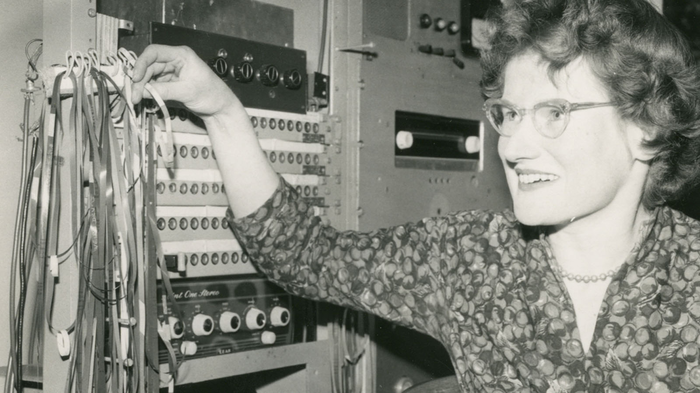

EXPERIMENTALES
Daphne Oram
Ingeniera compositora
Oramics es una técnica de sonido dibujado que involucra trazar formas y figuras directamente en películas de 35 mm, que luego son leídas por células fotoeléctricas y transformadas en sonidos. De acuerdo con Oram: “Cada matiz, cada sutileza del fraseo, cada graduación del tono o cambio en él, puede ser posible a través de un solo cambio en la forma del dibujo.La técnica Oramics y la flexibilidad del control sobre los matices del sonido era, en conjunto, nueva y un acercamiento innovador a la producción musical.
Las presiones con respecto al financiamiento significaban que era necesario mantener su trabajo como compositora musical y su trabajo en el sistema Oramics cubría una gama más amplia que la Estación Radiofónica. Produjo música no solo para la radio y la televisión, sino también para el teatro, películas comerciales e instalaciones sonoras y exhibiciones. Otro tipo de trabajo de este estudio incluía sonidos electrónicos para la película de horror de Jack Clayton los The Innocents (1961), obras de concierto que incluían Four Aspects y colaboraciones con los compositores de ópera, Thea Musgrave e Ivor Walswoth.
En febrero de 1962, fue galardonada con la cantidad de 3,500 libras (equivalente a £76,000 en 2019)por la Fundación Gulbenkian, para continuar el desarrollo del sistema Oramics. Un segundo apoyo de 1,000 libras fue otorgado por Gulbenkian en 1965. La primera composición totalmente dibujada usando la máquina se tituló Contrasts Essonic y fue grabada en 1963. Mientras la investigación de Oramics evolucionaba, el enfoque de esta se convirtió en matices sutiles e interacciones entre los paramentos de sonido. En esta fase de Oramics, Daphne aplicó su investigación sonora al comportamiento no-linear del oído humano y a la percepción de la aprensión del cerebro con respecto al mundo. Uso Oramics para estudiar el fenómeno vibraciones que marco la distinción entre “Oramic Comercial” y “ Oramics Mistica”. En sus notas, Oram definió Oramics como “El estudio del sonido y su relación con la vida”.
En la década de 1980, Oram trabajó en el desarrollo de Oramics en versión de software para la computadora Acron Archimedes.Oram deseaba continuar su investigación de “Mystical Oramics”, pero la falta de recursos evitó que su proyecto fuera realizado completamente.